Introduction to Numbas
Christian Lawson-Perfect
Newcastle University
Plan for today
- 2 hours
- Please interrupt at any time!
- Introduce Numbas and demo
- Write a first question
- Look at advanced features
- An open-source e-assessment system designed for mathematical subjects.
- Developed at Newcastle University since 2011.
- Used around the world.
Key features
- Randomised questions.
- Easy to use and accessible.
- Adaptive behaviour.
- Customisable everywhere.
- Lots of maths features.
- Runs standalone.
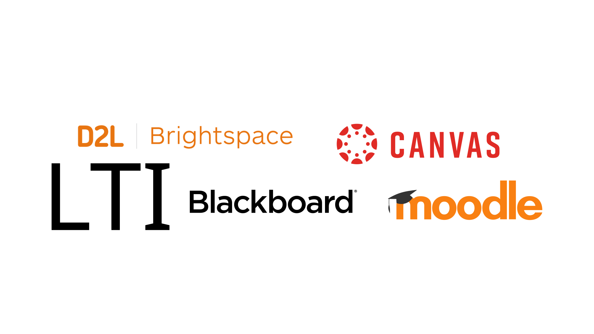
LTI support.
Question types
- Math notation
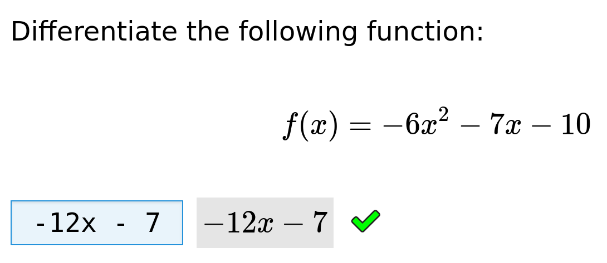
- Number
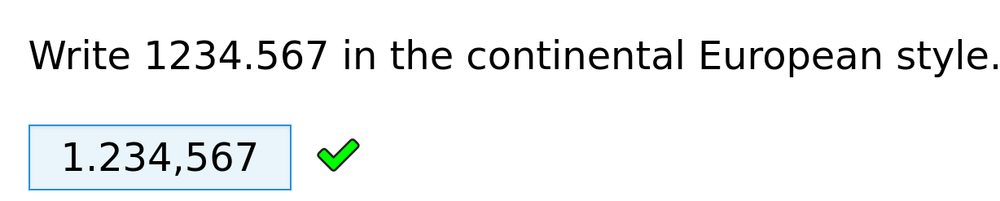
- Matrix
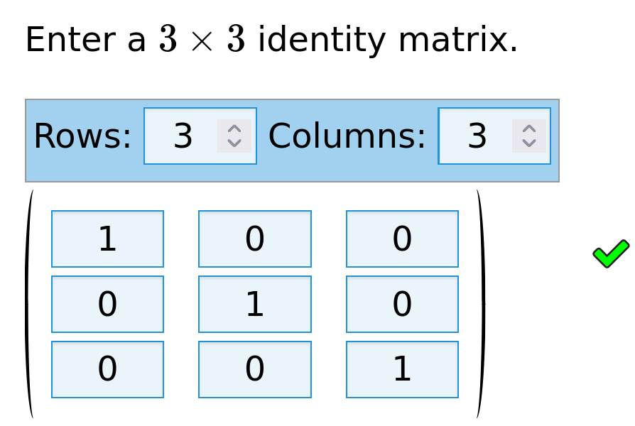
Question types
- Multiple choice
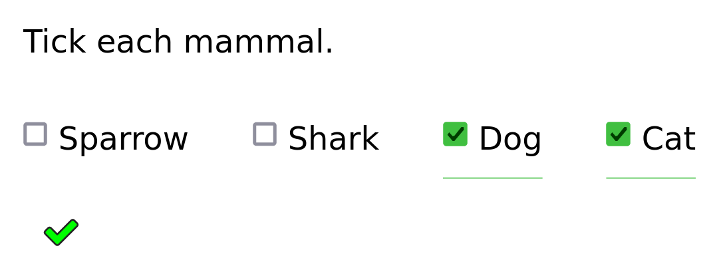
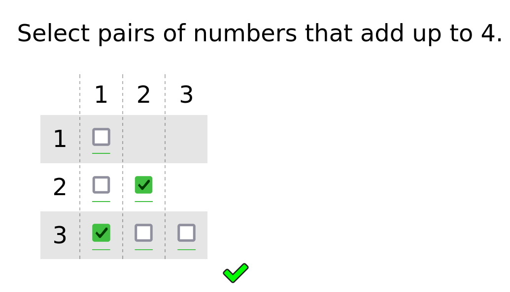
- Short text
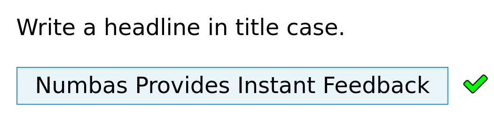
- Make your own
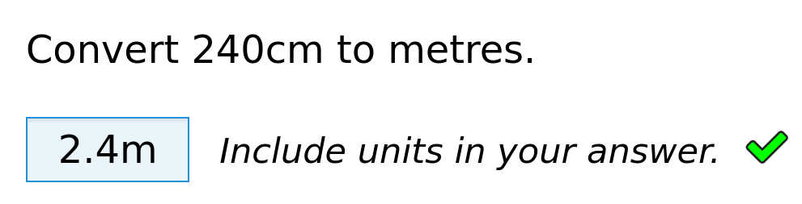
Question types
- Code
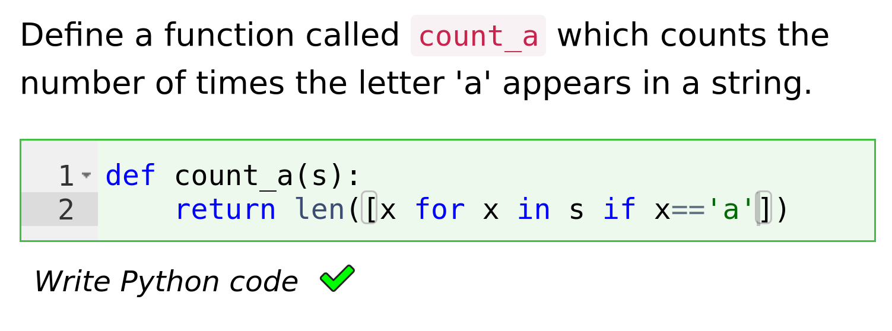
- Spreadsheet
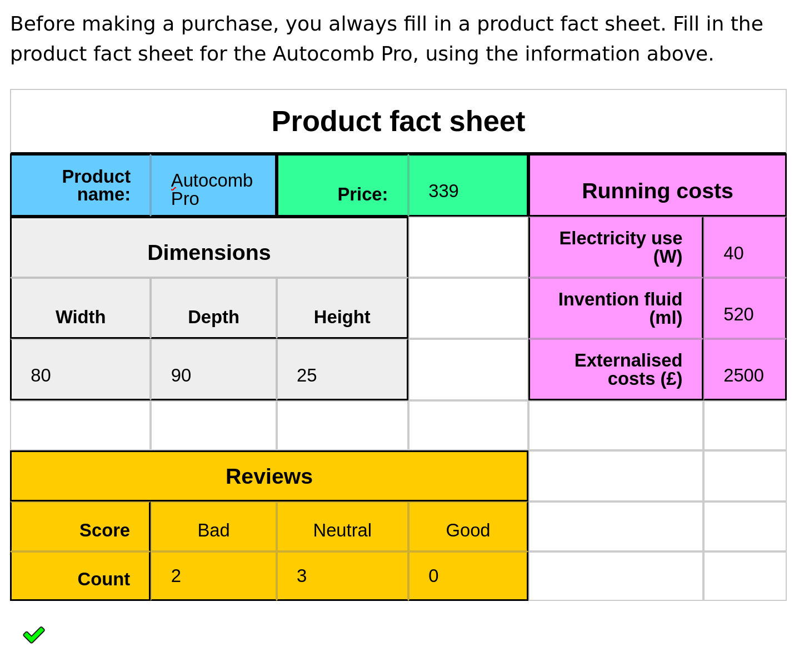
Interactive diagrams
- GeoGebra
- JSXGraph
Modes of use
- Sequential
- A fixed list of questions.
- Menu
- Student picks which questions they want to try.
- Diagnostic
- Adapts to student's performance.
- Explore
- Student picks their own path through an activity.
How we use it
- Large banks of practice material.
- In-course assessment: open for two weeks, worth 2% of module.
- Labs: students enter measurements; Numbas marks calculations.
- High-stakes assessments for many maths modules, as well as large service courses.
- Hybrid exams: some automatically marked, some marked by hand.
How to do it
- Large question-writing team.
- Think creatively about assessing hard topics.
- Check everything very thoroughly in advance.
The mathcentre editor
- Open to everyone.
- Collect ready-made questions into a custom test
- Or write your own.
Let's make this
Documentation
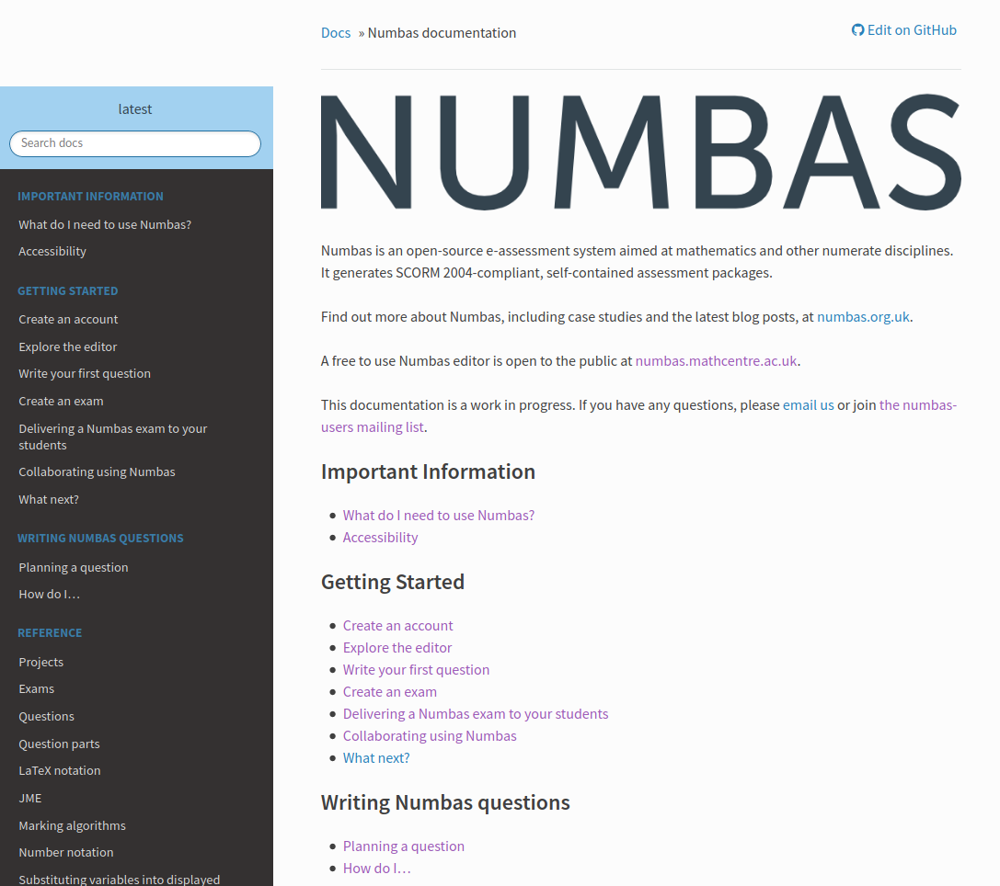
Planning a question
- What does the question assess?
- What does the student have to do?
- How might the student get the answer wrong?
- Sketch the structure of the question
- Implement the question in Numbas
- Pay attention to detail
- Think about randomisation
- Do the boring admin bits
Use projects
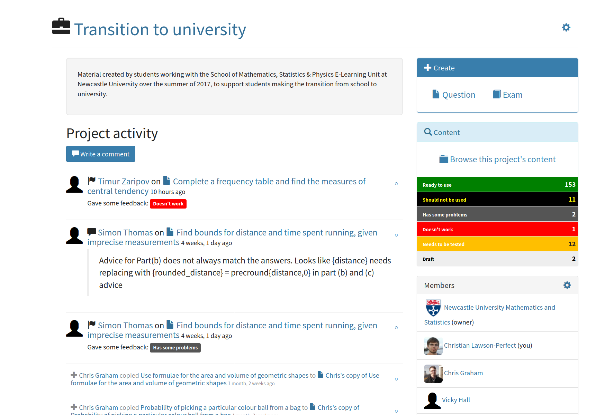
Organise material into folders

Use editing history to leave editing comments and set checkpoints
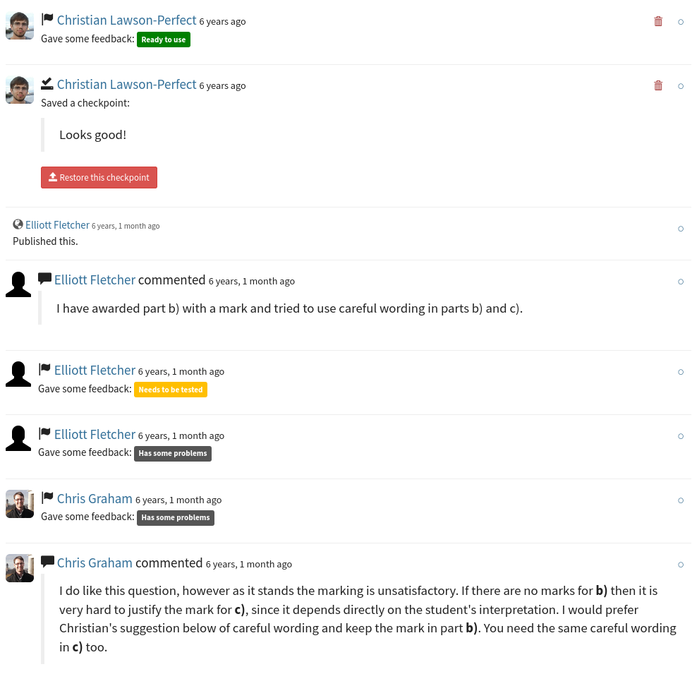
Write good variable descriptions
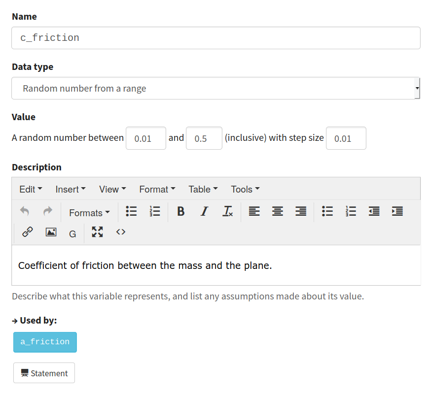
Use the "random person" extension
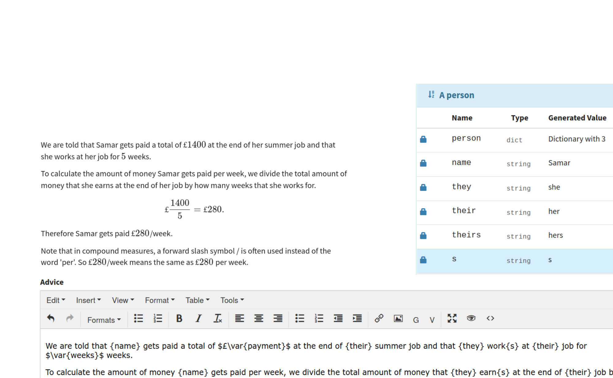
Create printable exams with the "printed worksheet" theme
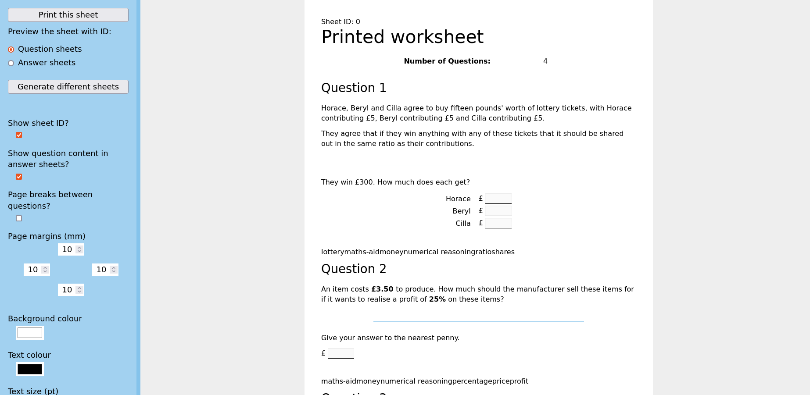
Extensions add functionality
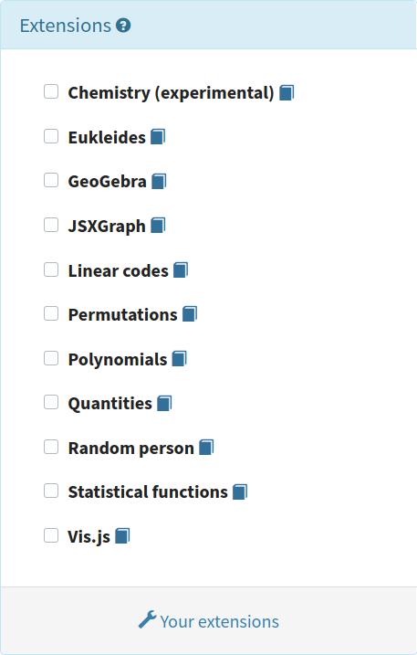
Custom part types allow different kinds of interaction
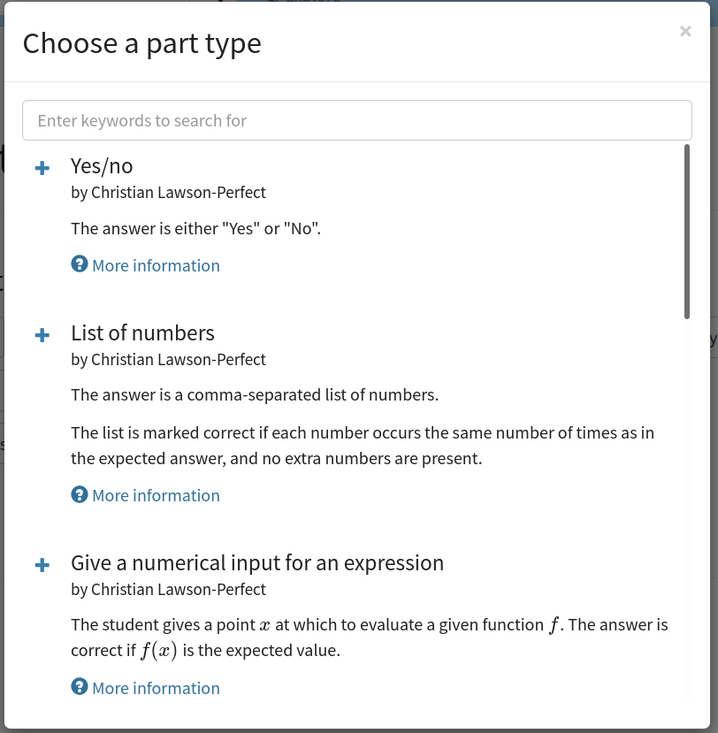
Thanks!
- Website
- numbas.org.uk
- numbas@ncl.ac.uk
- Fediverse
- @numbas@mathstodon.xyz
- Source code
- github.com/numbas
This slide intentionally left blank